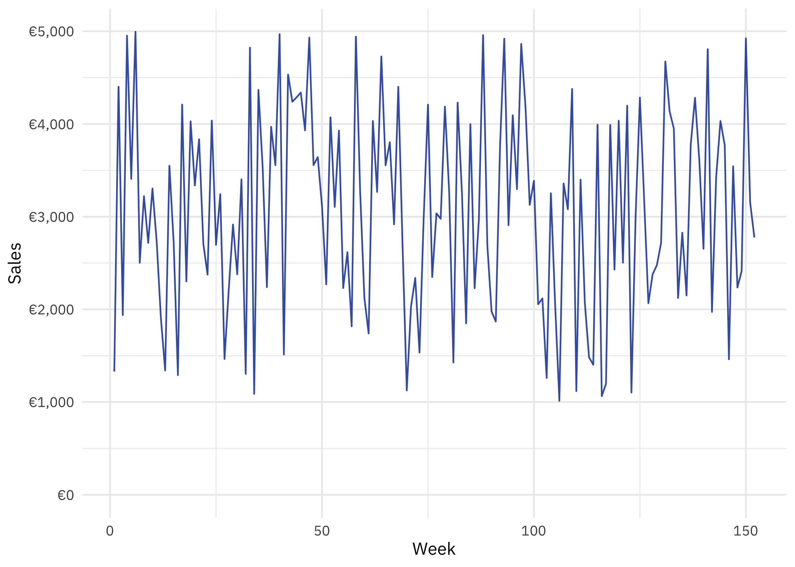
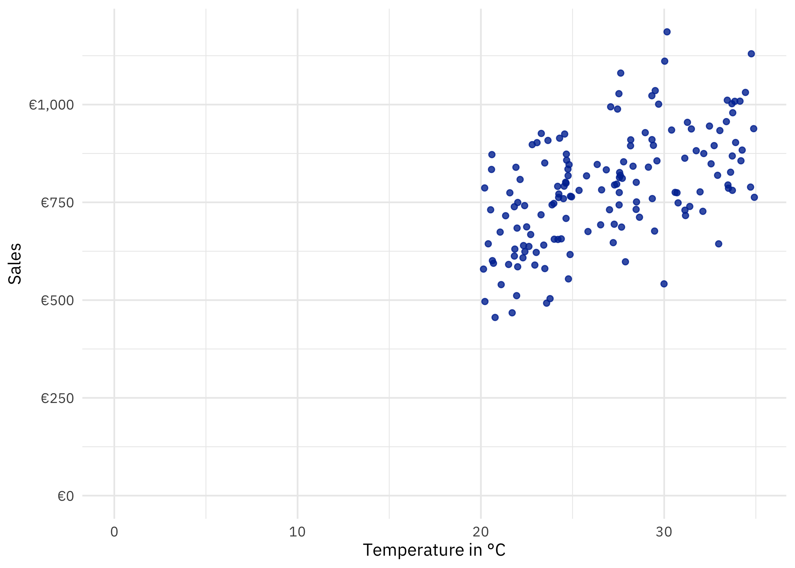
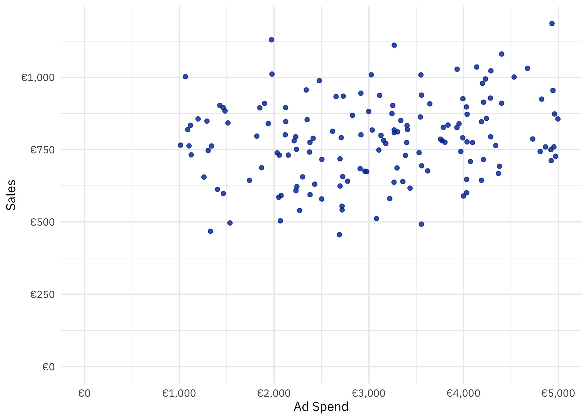
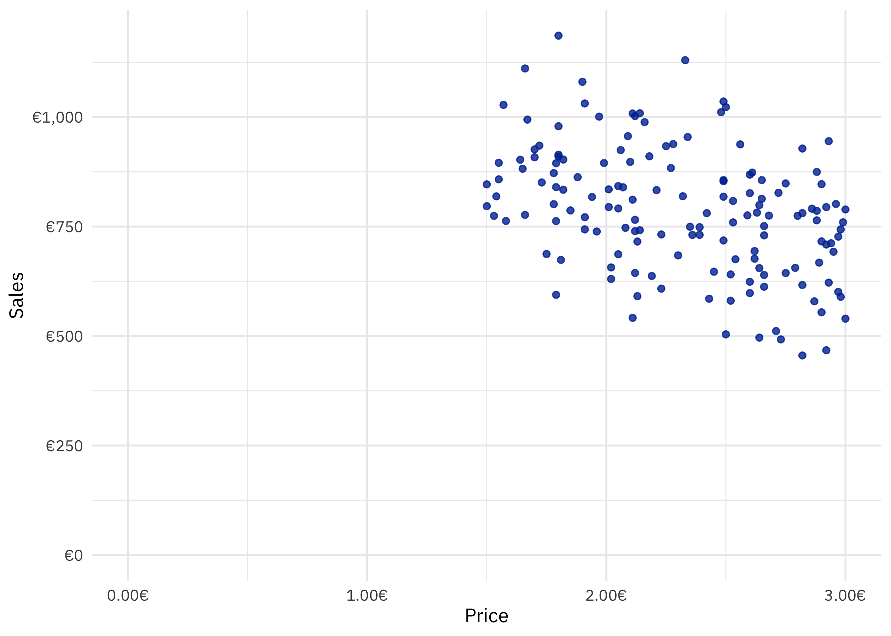

The Magic of Variance in Marketing Mix Modeling
Marketing Mix Modeling (MMM) is a statistical technique in econometrics that quantifies the impact of various marketing and sales activities on sales of a company. It also incorporates external factors that are typically beyond a company’s control, such as weather, holidays, or competitive activities.
Since I work in the area of MMM, I’m often asked a similar question:
How can MMM actually disentangle the effects of various factors, like advertising campaigns across multiple media channels, POS promotions, or weather? How does this “disentangling” work?
The answer lies in the concept of variance. By capturing and analyzing the variation in data, MMM can attribute changes in sales to specific factors like advertising, price changes, or external conditions such as weather – precisely the variance of these factors. In turn, this explains why MMMs are typically very greedy on data.
Why Variance Matters
Variance is essentially the “spread” or “dispersion” in data. When factors such as advertising spend, product pricing, and weather fluctuate, they create unique “patterns” in the data. These patterns allow MMM to distinguish the unique contribution of each factor to the overall sales. The model then estimates each variable’s impact by looking at how variations in these variables align with variations in sales over time.
To illustrate, imagine observing the temperature in a city where ice cream is sold. If the temperature were always a constant 25°C, there would be no variance in the temperature, and the model couldn’t estimate the effect of temperature on sales of the ice cream. However, if the temperature fluctuates the model can analyze how sales change as the temperature rises or falls, attributing a portion of the sales changes to temperature change.
Variance and Independence
Another crucial aspect of variance is how independent it is across variables. If variables such as advertising spend and temperature are strongly correlated – for example, if higher advertising spend always coincides with warmer weather – it becomes harder for the model to distinguish their effects. This issue, called multicollinearity, can obscure the true influence of each factor.
Ideally, each variable should have its own distinct and independent variance to enable the model to disentangle their contributions clearly. This is one reason why MMMs often require large, granular datasets – they help ensure sufficient variation and independence among factors.
Variance as the Key to Disentangling
In summary, variance is the foundation of how MMMs work. By identifying and analyzing differences in data, the model can separate the effects of multiple factors on sales. More variance means better opportunities to isolate these effects, making high-quality, diverse data essential for effective modeling. This ability to leverage variance is what gives MMMs their “magic” when it comes to attributing outcomes.
Giving Intuition - Ice Cream
To demonstrate this in a simple example, let’s take an ice cream company and see how MMM might work to disentangle the effects of advertising, temperature, and price on sales.
Data Exploration
In this example, we’ll simulate weekly ice cream sales data over three years (152 weeks) along with three explanatory variables:
advertising spend,
average weekly temperature,
and the price of ice cream.
The ice creams sales (dependent variable) we want to explain by the three variables above (independent variables).
To not over-complicate things, in this example we assume the ice cream is sold in a market with warm temperatures (20°C - 35°C) across the year. Likewise we take the advertising spend into consideration, which is usually not best practice due to seasonality of media costs. That’s why one actually should use an activity metric. But in this example, for the sake of intuition, we remain with the spend. Furthermore the three independent variables are correlated to a a minimum.
Exploration of Ice Cream Sales
This is the time series of the sales of ice cream over 152 consecutive weeks. We can see lots of variation (weekly ups and downs of the sales). Typically, variation is captured using standardized metrics in statistics. Let’s explore this further.
| skim_type | skim_variable | n_missing | complete_rate | numeric.mean | numeric.sd | numeric.p0 | numeric.p25 | numeric.p50 | numeric.p75 | numeric.p100 | numeric.hist |
|---|---|---|---|---|---|---|---|---|---|---|---|
| numeric | sales | 0 | 1 | 786.3433 | 142.7682 | 455.6699 | 687.173 | 786.4601 | 876.618 | 1186.034 | ▂▆▇▅▁ |
The average weekly sales amount to 786 Euros, with a standard deviation of 142 Euros. This indicates that, on average, weekly sales fluctuate by approximately ±142 Euros around the mean. In other words, most weeks (about 68%, assuming a normal distribution) see sales between 644 Euros and 928 Euros.
Further more we can see the min (percentile 0) and max (percentile 100), giving us the range of the variation, from 455 Euros to 1186 Euros.
Connection with Sales
No we need to go one step further and check the bi-variate connection of each factor impacting the sales. To visually inspect the connection properly, in statistics it is very common to use a scatter plot. Since ice cream sales is the dependent variable, we put this on the y-axis and the other variables on the x-axis.



We can clearly see: the warmer it is, the higher the sales. But also: the more is spent in advertising.
And intuitively: the higher the price, the less the sales.
Creating Intuition
Now there is the problem going further: how can the model, which explains overall sales know, what is driven by what impacting factor and to what extend? As we already learned: it is about the variation. We will know give intuition about this concept and how it helps to disentangle the effects.
Therefore we will calculate the average of each indepentent variable and then for each week check if it is above average or below average. For each week and variable, the we calculate an indicator variables, showing if the actual value in the respective week is above or below the average. This information will be transformed into 1 and 0 accordingly. And then we paste the information in one string, and simply count the occurrence. The order of the string is: “temperature above everage”, “ad_spend_above_average” and “price_above_average”.
Lets see the result.
| combination | n |
|---|---|
| 0 0 0 | 16 |
| 0 0 1 | 19 |
| 0 1 0 | 20 |
| 0 1 1 | 20 |
| 1 0 0 | 21 |
| 1 0 1 | 17 |
| 1 1 0 | 17 |
| 1 1 1 | 22 |
How to read this?
There is 22 cases in the data, where all the independent variables are above its average (1 1 1). And there is almost all possible combinations of being a variable above or below its average, e.g. 16 occurences, where all thre independent variables are below average.
Now what we want to do this is, per group, add the average sales of this group.
| combination | average_sales |
|---|---|
| 0 0 0 | 707.8060 |
| 0 0 1 | 619.2067 |
| 0 1 0 | 824.0825 |
| 0 1 1 | 701.2840 |
| 1 0 0 | 867.8043 |
| 1 0 1 | 818.0238 |
| 1 1 0 | 937.6542 |
| 1 1 1 | 811.6645 |
Thats very interesting. In the 16 weeks, where all variables are below its average, the average sales are 707,81 Euro. If the price increases above its average, the sales drops even more to 619,21 Euros (I would say, this forms the worst conditions for ice cream sales: colder temperatures, lower advertising and higher prices). Likewise, if it is warmer than the average, and the sales are supported by advertising and the prices are decreasing, then we see the hightest sales of 937,65 Euros.
Now lets make a twist, and arrange not by the combination but the average sales.
| combination | average_sales |
|---|---|
| 0 0 1 | 619.2067 |
| 0 1 1 | 701.2840 |
| 0 0 0 | 707.8060 |
| 1 1 1 | 811.6645 |
| 1 0 1 | 818.0238 |
| 0 1 0 | 824.0825 |
| 1 0 0 | 867.8043 |
| 1 1 0 | 937.6542 |
We can see that we see the “1” at the start of the combination, indicating the weather, is rather at the bottom. Hence we can generalize: the warmer, the more ice cream sold. We can on the opposite see, the negative impact of the price. For the ad spend it is not so clear. What we can conclude here is, that the model will most likley come to the conclusion, that the price as such as a negative impact (negativ sign). And also that temperature will most likely have the strongest positive impact on sales.
Actual Model
Lets check the assumption from the previous chapter and create the model.
Call:
lm(formula = sales ~ (temperature) + (ad_spend) + (price), data = data)
Residuals:
Min 1Q Median 3Q Max
-319.80 -62.19 -1.21 59.89 236.74
Coefficients:
Estimate Std. Error t value Pr(>|t|)
(Intercept) 4.984e+02 6.653e+01 7.491 5.73e-12 ***
temperature 1.907e+01 1.793e+00 10.635 < 2e-16 ***
ad_spend 3.615e-02 7.156e-03 5.053 1.27e-06 ***
price -1.457e+02 1.766e+01 -8.249 8.02e-14 ***
---
Signif. codes: 0 '***' 0.001 '**' 0.01 '*' 0.05 '.' 0.1 ' ' 1
Residual standard error: 95.06 on 148 degrees of freedom
Multiple R-squared: 0.5654, Adjusted R-squared: 0.5566
F-statistic: 64.19 on 3 and 148 DF, p-value: < 2.2e-16
Call:
lm(formula = sales ~ scale(temperature) + scale(ad_spend) + scale(price),
data = data)
Residuals:
Min 1Q Median 3Q Max
-319.80 -62.19 -1.21 59.89 236.74
Coefficients:
Estimate Std. Error t value Pr(>|t|)
(Intercept) 786.343 7.711 101.982 < 2e-16 ***
scale(temperature) 82.400 7.748 10.635 < 2e-16 ***
scale(ad_spend) 39.222 7.763 5.053 1.27e-06 ***
scale(price) -63.979 7.756 -8.249 8.02e-14 ***
---
Signif. codes: 0 '***' 0.001 '**' 0.01 '*' 0.05 '.' 0.1 ' ' 1
Residual standard error: 95.06 on 148 degrees of freedom
Multiple R-squared: 0.5654, Adjusted R-squared: 0.5566
F-statistic: 64.19 on 3 and 148 DF, p-value: < 2.2e-16The best way to compare the coefficients is the standardized view, as each independent variable has a different scale (e.g., euros, degrees Celsius). Standardization brings all variables onto the same scale by centering them around their mean and dividing by their standard deviation. This ensures that the effects are comparable, regardless of their original units. A higher standardized coefficient indicates which factor has the strongest influence, independent of its initial scale.
The model results confirm our assumptions. Temperature has the strongest positive impact on sales, with a standardized coefficient of 82.4, followed by advertising spend at 39.2. Price, as expected, has a negative impact, with a coefficient of -63.98, meaning higher prices significantly reduce sales. All these coefficients are statistically significant at the p < 0.001level, showing robust relationships.
The model explains approximately 56.5% of the variation in sales (R-squared = 0.5654) and has a residual standard error of 95.06. The explanation of variance is not the best, and I would be rather careful with this model. Obviously there is sales-driving factors, which are not captured in the model (e.g. could be the friendliness of the sales staff, the selling place, but also the economic situation of the clients).
In summary, warmer temperatures and increased advertising positively influence sales, while higher prices reduce them, with temperature being the dominant driver.
Conclusion
This post aimed to provide an intuitive understanding of how Marketing Mix Models disentangle effects. By leveraging variance and observing patterns in data, MMM can quantify the impact of different factors like temperature, advertising, and price on sales. Standardizing variables ensures fair comparisons of their influence, while analyzing combinations of factors reveals deeper insights into their interactions.
In practice, MMMs are invaluable tools for understanding what drives sales, but their accuracy depends on data quality and variance. By applying these principles, businesses can make more informed marketing decisions.